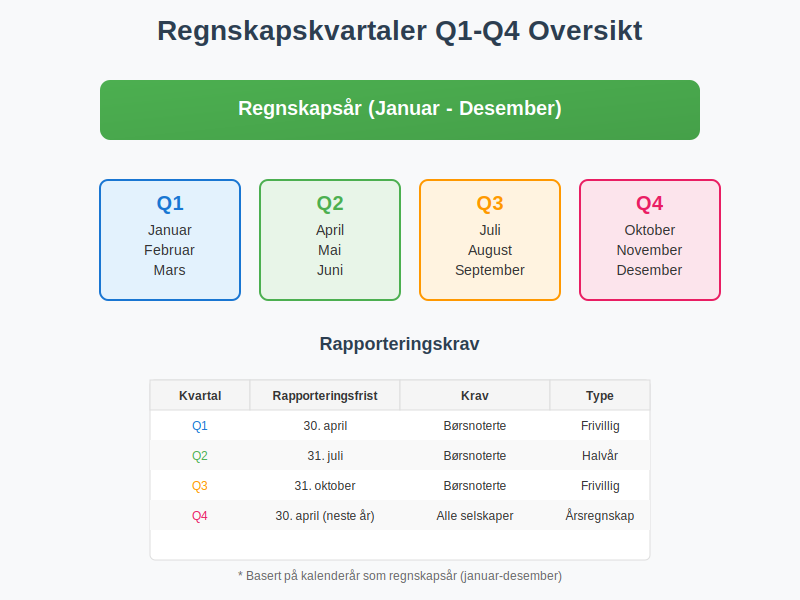
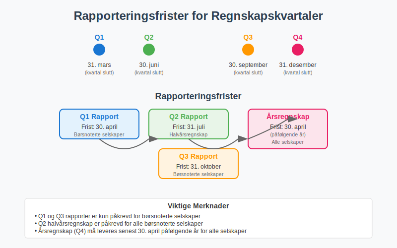
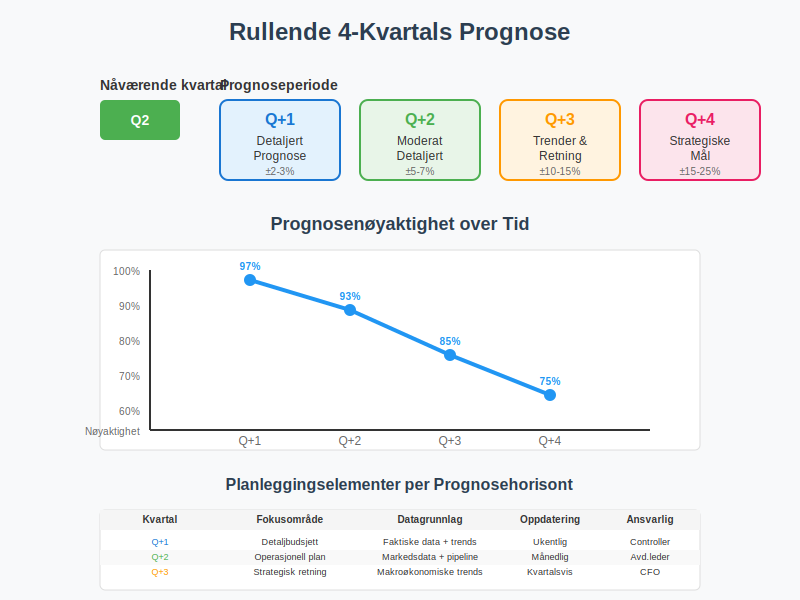
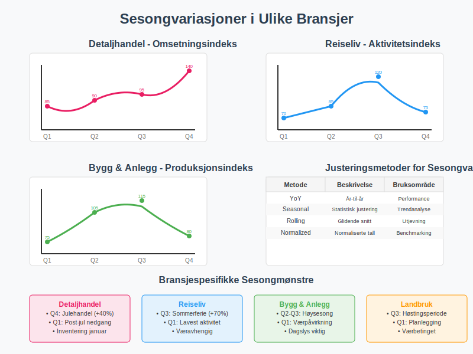
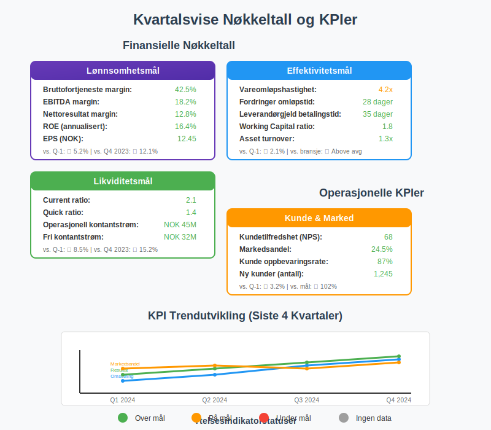
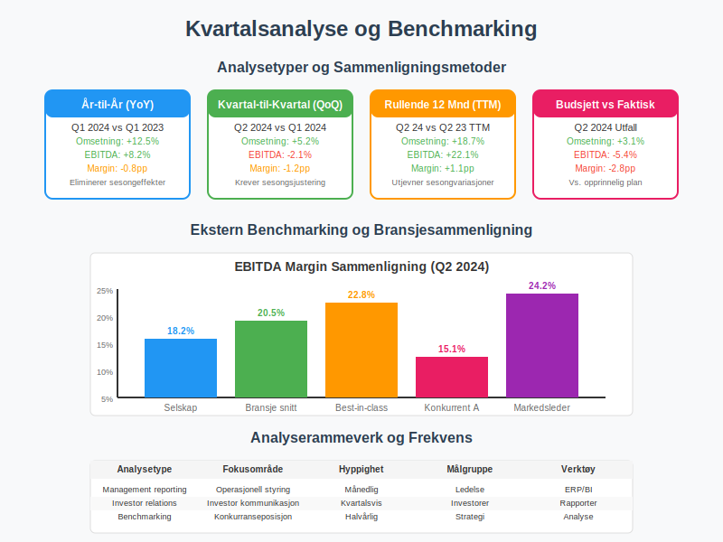
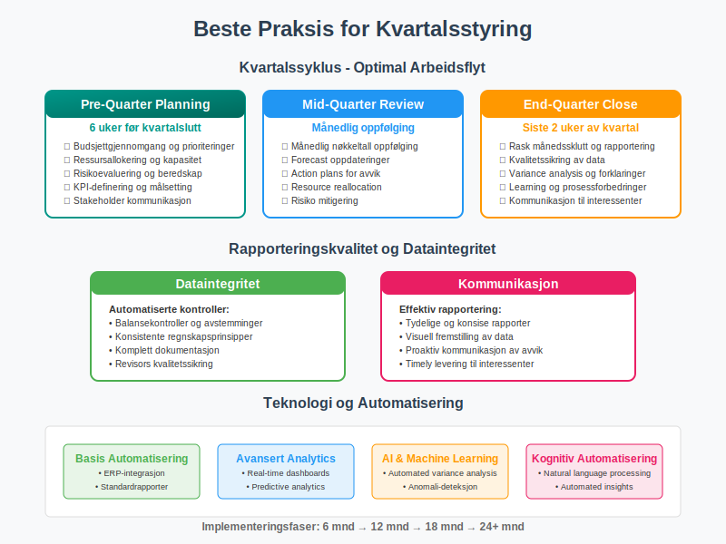
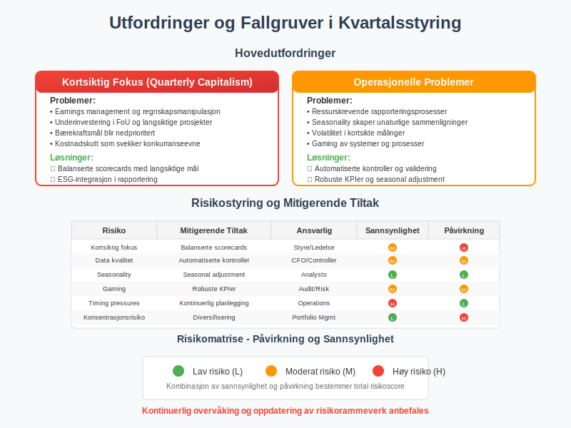
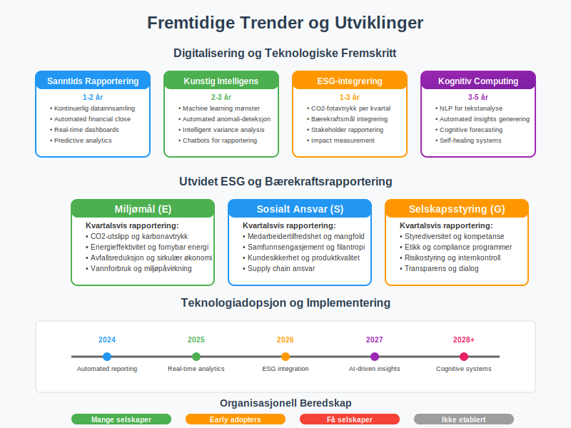
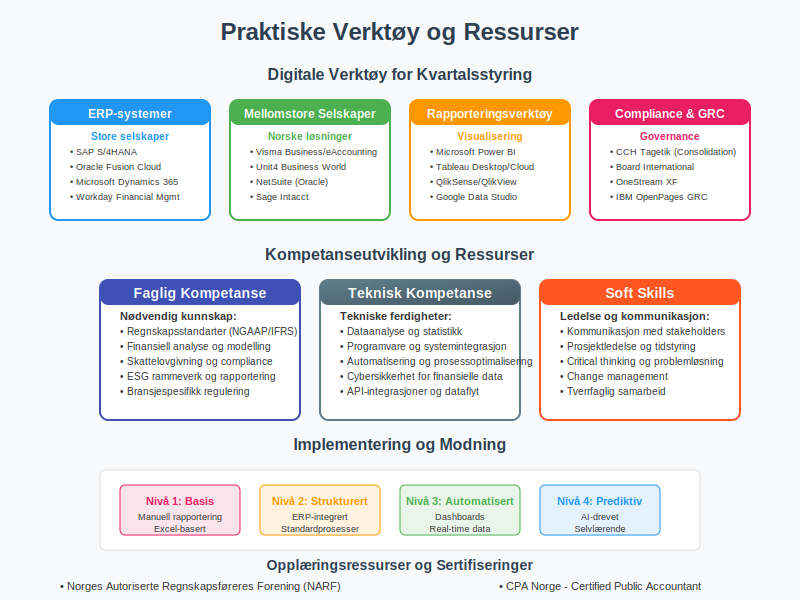

Regnskapskvartaler Q1-Q4 er en grunnleggende organisering av regnskapsåret som deler de tolv månedene inn i fire kvartaler. Denne inndelingen er sentral for finansiell rapportering, budsjettplanlegging og økonomisk analyse både for norske og internasjonale selskaper. Forståelse av regnskapskvartaler er avgjørende for alle som arbeider med regnskap, finans eller forretningsanalyse.
Definisjon og Struktur av Regnskapskvartaler
Grunnleggende Inndeling
Regnskapsåret deles inn i fire kvartaler på følgende måte:
- Q1 (Første kvartal): Januar - Mars
- Q2 (Andre kvartal): April - Juni
- Q3 (Tredje kvartal): Juli - September
- Q4 (Fjerde kvartal): Oktober - Desember

Norske vs. Internasjonale Standarder
I Norge følger de fleste selskaper kalenderår som regnskapsår, noe som betyr at kvartalene sammenfaller med de tradisjonelle kalenderkvartalene. Dette er i tråd med regnskapsloven og Good Accounting Practice (GAP).
| Land/Region | Vanlig Regnskapsår | Q1 Start | Kommentarer |
|---|---|---|---|
| Norge | Kalenderår (Jan-Des) | 1. januar | Regnskapsloven krever kalenderår |
| USA | Varierer | Ulikt | Mange selskaper bruker fiscal year |
| Japan | April-Mars | 1. april | Traditionelt basert på skoleår |
| Australia | Juli-Juni | 1. juli | Følger statens budsjettår |
Regnskapskvartaler og Finansiell Rapportering
Kvartalsrapportering
Børsnoterte selskaper på Oslo Børs må levere kvartalsrapporter som inneholder:
Påkrevd Innhold i Kvartalsrapporter
- Resultatregnskap for kvartalet og kumulativt
- Balanse per kvartalets slutt
- Kontantstrømoppstilling
- Nøkkeltall og sammenligningstall
- Kommentarer til utvikling og utsikter
Rapporteringsfrister
| Kvartal | Rapporteringsfrist | Børskrav | Regnskapsloven |
|---|---|---|---|
| Q1 | 30. april | Børsnoterte | Ikke påkrevd |
| Q2 | 31. juli | Børsnoterte | Halvårsregnskap |
| Q3 | 31. oktober | Børsnoterte | Ikke påkrevd |
| Q4 | 30. april (årsregnskap) | Alle selskaper | Årsregnskap |

Kvartalsvise Planlegging og Budsjett
Budsjettplanlegging etter Kvartaler
Virksomheter bruker kvartaler som grunnlag for:
Operasjonell Planlegging
- Salgsmål og markedsføringskampanjer
- Produksjonplanlegging og lagerstyring
- Personalplanlegging og rekruttering
- Investeringer i anleggsmidler
Finansiell Planlegging
- Likviditetsstyring og kassaflyt
- Finansieringsstrategier og låneopptak
- Dividend og tilbakebetaling til eiere
- Skattebetaling og merverdiavgift
Rullende Prognoser
Mange selskaper arbeider med rullende 4-kvartals prognoser:
- Q+1: Detaljert prognose for neste kvartal
- Q+2: Moderat detaljerte anslag
- Q+3: Overordnede trender og retning
- Q+4: Strategiske mål og milepæler

Sesongvariasjoner og Kvartalseffekter
Typiske Sesongmønstre
Ulike bransjer opplever forskjellige sesongvariasjoner:
Detaljhandel
- Q1: Post-jule nedgang, vintersalg
- Q2: Våroppgang, påskeshopping
- Q3: Sommerferie, reiseperiode
- Q4: Julehandel, høyeste omsetning
Reiseliv og Turisme
- Q1: Lavest aktivitet, planlegging
- Q2: Påskeferie, økende booking
- Q3: Høysesong, maksimal kapasitet
- Q4: Vinterturisme, julebord
Bygg og Anlegg
- Q1: Lavere aktivitet, værpåvirkning
- Q2: Oppstart, økt aktivitet
- Q3: Høysesong, maksimal produksjon
- Q4: Ferdigstillelse, værutfordringer
Justering for Sesongvariasjoner
For sammenlignbar analyse brukes:
| Metode | Beskrivelse | Bruksområde |
|---|---|---|
| Seasonally adjusted | Statistisk justering | Trendanalyse |
| YoY sammenligning | År-til-år sammenligning | Performance tracking |
| Rolling averages | Glidende gjennomsnitt | Utjevning av svingninger |
| Normalized ratios | Normaliserte nøkkeltall | Bransjebenchmarking |

Kvartalsvise Nøkkeltall og KPIer
Finansielle Nøkkeltall per Kvartal
Viktige målinger som følges kvartalsvis:
Lønnsomhetsmål
- Bruttofortjeneste margin
- EBITDA og EBITDA-margin
- Nettoresultat per aksje (EPS)
- Avkastning på egenkapital (ROE)
Effektivitetsmål
- Omløpshastighet på varelageret
- Kundefordringer omløpstid
- Leverandørgjeld betalingstid
- Working capital effektivitet
Likviditetsmål
- Current ratio
- Quick ratio
- Operasjonell kontantstrøm
- Fri kontantstrøm
Operasjonelle KPIer
Ikke-finansielle indikatorer per kvartal:
- Kundetilfredshet og NPS-score
- Markedsandel og konkurranseposisjon
- Medarbeidertilfredshet og turnover
- Miljø- og bærekraftsmål

Kvartalsvise Skattemessige Forhold
MVA-rapportering
Merverdiavgift rapporteres månedlig eller torvmånedlig, men planlegges ofte kvartalsvis:
MVA-planlegging per Kvartal
- Inngående MVA på innkjøp og investeringer
- Utgående MVA på salg og tjenester
- Netto MVA-resultat og likviditetspåvirkning
- Refusjonskrav og tilgodehavender
Forskuddsskatt og Skattekort
Personlig næringsdrivende og ENK planlegger kvartalsvis:
| Periode | Forskuddsskatt | Forfallsdato | Planleggingsaspekt |
|---|---|---|---|
| Q1 | 1. termin | 15. mars | Innbetaling basert på fjorårets skatt |
| Q2 | 2. termin | 15. mai | Justering basert på Q1 resultat |
| Q3 | 3. termin | 15. september | Midjusteriing av prognoser |
| Q4 | Oppgjør | 31. mars (neste år) | Final skatteavregning |

Kvartalsanalyse og Benchmarking
Intern Analyse
Selskaper sammenligner sine kvartalsresultater med:
Historiske Data
- Samme kvartal foregående år (YoY)
- Forrige kvartal (QoQ) med sesongsjustering
- Rullende 12 måneders periode (TTM)
- Budget og prognose avvik
Trendanalyse
- 3-5 års kvartalsutvikling
- Sesongkorrigerte trender
- Sykliske mønstre og avvik
- Strukturelle endringer over tid
Ekstern Benchmarking
Sammenligning med bransje og konkurrenter:
Bransjesammenligninger
- Bransjegjennomsnittet for nøkkeltall
- Best-in-class prestasjonsstandarder
- Peer group analyser
- Markedsleder benchmarking
Markedsindekser
- Oslo Børs sektorindekser
- Nordiske sammenligninger
- Globale bransjeindekser
- ESG-ratinger og bærekraftsmål
| Analysetype | Fokusområde | Hyppighet | Målgruppe |
|---|---|---|---|
| Management reporting | Operasjonell styring | Månedlig/Kvartalsvis | Ledelse |
| Investor relations | Investor kommunikasjon | Kvartalsvis | Investorer |
| Benchmarking | Konkurranseposisjon | Halvårlig | Strategi |
| Compliance | Regnskapsrapportering | Kvartalsvis | Revisorer |

Beste Praksis for Kvartalsstyring
Planlegging og Forberedelse
Effektiv kvartalsstyring krever:
Pre-Quarter Planning
- Budsjettgjennomgang og prioriteringer
- Ressursallokering og kapasitetsplanlegging
- Risikoevaluering og beredskapsplaner
- Mål-setting og KPI-definering
Mid-Quarter Review
- Månedlig oppfølging av nøkkeltall
- Forecast oppdateringer og justeringer
- Action plans for avvik
- Resource reallocation ved behov
End-Quarter Close
- Rask månedssklutt og rapportering
- Kvalitetssikring av data
- Variance analysis og forklaringer
- Learning og prosessforbedringer
Rapporteringskvalitet
Høy kvalitet på kvartalsrapportering sikres gjennom:
Dataintegritetet
- Automatiserte kontroller og validering
- Konsistente regnskapsprinsipper
- Komplett dokumentasjon og sporbarhiet
- Revisors kvalitetssikring
Kommunikasjon
- Tydelige og konsise rapporter
- Visuell fremstilling av data
- Proaktiv kommunikasjon av avvik
- Timely levering til interessenter

Utfordringer og Fallgruver
Typiske Utfordringer
Kvartalsstyring kan skape utfordringer:
Kortsiktig Fokus
- Kvartalskapitalisme vs. langsiktig verdiskaping
- Earnings management og regnskapsmanipulasjon
- Underinvestering i forskning og utvikling
- Bærekraftsmål blir nedprioritert
Operasjonelle Problemer
- Ressurskrevende rapporteringsprosesser
- Seasonality skaper unaturlige sammenligninger
- Volatilitet i kortsikte målinger
- Gaming av systemer og prosesser
Risikostyring
Mitigerende tiltak inkluderer:
| Risiko | Mitigerende Tiltak | Ansvarlig |
|---|---|---|
| Kortsiktig fokus | Balanserte scorecards | Styre/Ledelse |
| Data kvalitet | Automatiserte kontroller | CFO/Controller |
| Seasonality | Seasonal adjustment | Analysts |
| Gaming | Robuste KPIer | Audit/Risk |

Fremtidige Trender og Utviklinger
Digitalisering og Automatisering
Teknologiske fremskritt påvirker kvartalsstyring:
Sanntids Rapportering
- Kontinuerlig datainnsamling og analyse
- Automated financial close prosesser
- Real-time dashboards og KPIer
- Predictive analytics for prognoser
Kunstig Intelligens
- Machine learning for mønstergjenkjenning
- Automated anomali-deteksjon
- Intelligent variance analysis
- Chatbots for rapporteringsassistanse
ESG og Bærekraftsrapportering
Utvidet rapportering inkluderer:
Miljømål (E)
- CO2-fotavtrykk per kvartal
- Energieffektivitet og fornybar energi
- Avfall og sirkulær økonomi
- Vannforbruk og miljøpåvirkning
Sosialt Ansvar (S)
- Medarbeidertilfredshet og mangfold
- Samfunnsengasjement og filantropi
- Kundesikkerhet og produktkvalitet
- Supply chain ansvar
Selskapsstyring (G)
- Styrediversitet og kompetanse
- Etikk og compliance programmer
- Risikostyring og internkontroll
- Transparens og stakeholder dialog
| Trendområde | Tidshorisont | Påvirkning | Beredskapsnivå |
|---|---|---|---|
| Automated reporting | 1-2 år | Høy | Mange selskaper |
| Real-time analytics | 2-3 år | Høy | Early adopters |
| ESG integration | 1-3 år | Moderat | Stort flertall |
| AI-driven insights | 3-5 år | Høy | Få selskaper |

Praktiske Verktøy og Ressurser
Digitale Verktøy
Programvare for kvartalsstyring:
ERP-systemer
- SAP og Oracle for store selskaper
- Microsoft Dynamics for mellomstore
- Visma og Unit4 for norske selskaper
- NetSuite for cloud-baserte løsninger
Rapporteringsverktøy
- Power BI og Tableau for visualisering
- Excel og Google Sheets for mindre selskaper
- CCH Tagetik for financial consolidation
- Adaptive Insights for planning og budgeting
Compliance og Governance
- Board og Solver for corporate performance management
- GRC platformer for risikostyring
- ESG rapporteringsverktøy
- Audit management systemer
Kompetanseutvikling
Nødvendig kompetanse for kvartalsstyring:
Faglig Kompetanse
- Regnskapsstandarter (NGAAP/IFRS)
- Finansiell analyse og modelling
- Skattelovgivning og compliance
- ESG rammeverk og rapportering
Teknisk Kompetanse
- Dataanalyse og statistikk
- Programvare og systemintegrasjon
- Automatisering og prosessoptimalisering
- Cybersikkerhet for finansielle data
Soft Skills
- Kommunikasjon med forskjellige interessenter
- Prosjektledelse og tidstyring
- Critical thinking og problemløsning
- Change management og transformasjon

Konklusjon
Regnskapskvartaler Q1-Q4 er fundamentale byggesteiner i moderne finansstyring og rapportering. For norske selskaper representerer den kvartalsvise inndelingen ikke bare en administrativ nødvendighet, men en strategisk ramme for planlegging, kontroll og kommunikasjon med interessenter.
Viktige erkjennelser:
- Strukturert planlegging: Kvartaler gir en naturlig rytme for budsjettplanlegging og måloppfølging
- Sammenlignbarhet: Konsistent kvartalsinndeling muliggjør meningsfull sammenligning over tid og mellom selskaper
- Interessentkommunikasjon: Kvartalsrapporter er et kritisk verktøy for dialog med investorer, kreditorer og andre stakeholders
- Operasjonell kontroll: Regular kvartalsoppfølging sikrer tidlig varsling av avvik og mulighet for korrigerende tiltak
Utfordringer og muligheter:
Moderne virksomheter må balansere kravene til kvartalsvis rapportering med behovet for langsiktig verdiskaping. Dette krever:
- Robuste systemer for datainnsamling og kvalitetssikring
- Balanserte målsetninger som unngår kortsiktig optimalisering
- Teknologisk modning for å redusere rapporteringsbyrden
- ESG-integrering for fremtidig relevans
Praktisk anvendelse:
For å optimalisere kvartalsstyringen bør organisasjoner:
- Investere i automatiserte rapporteringssystemer
- Utvikle kompetanse innen dataanalyse og forecasting
- Etablere klare roller og ansvar for kvartalsoppfølging
- Implementere kontinuerlige forbedringsprocesser
Som grunnleggende tidsramme for finansiell styring vil regnskapskvartaler fortsette å spille en sentral rolle i norsk næringsliv. Ved å forstå og mestre kvartalsstyringen kan ledere og finansfolk bidra til mer informerte beslutninger, bedre ressursallokering og sterkere stakeholder-relasjoner.
Fremtidige perspektiver:
Den teknologiske utviklingen vil gradvis transformere hvordan vi arbeider med kvartalsdata - fra manuell datainnsamling til automatiserte, sanntidsbaserte analyser. ESG-rapportering vil bli en integrert del av kvartalskommunikasjonen, og kunstig intelligens vil muliggjøre mer sofistikerte prognoser og trendanalyser.
Organisasjoner som investerer i å mestre kvartalsstyringen i dag, posisjonerer seg for å dra nytte av disse teknologiske fremskrittene og regulatoriske endringene som kommer. Regnskapskvartaler er ikke bare en rapporteringskonvensjon - de er et verktøy for strategisk ledelse og verdskapning i en stadig mer kompleks forretningsverden.